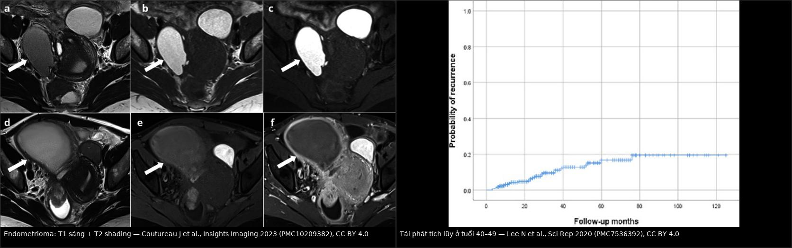
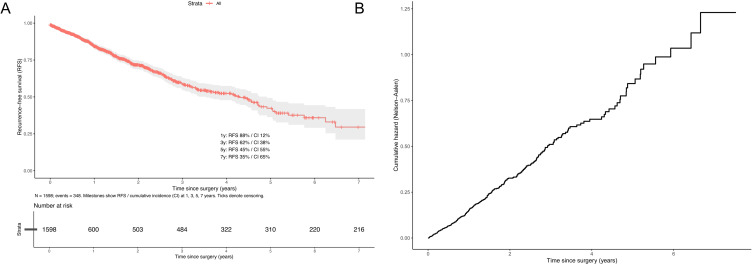
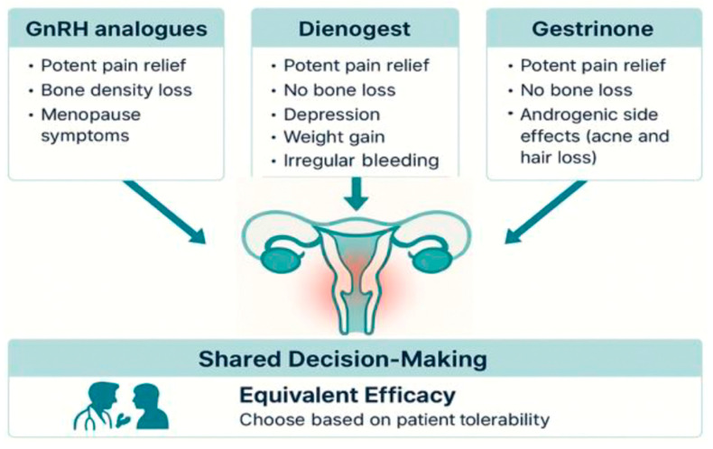
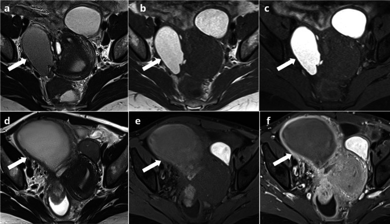
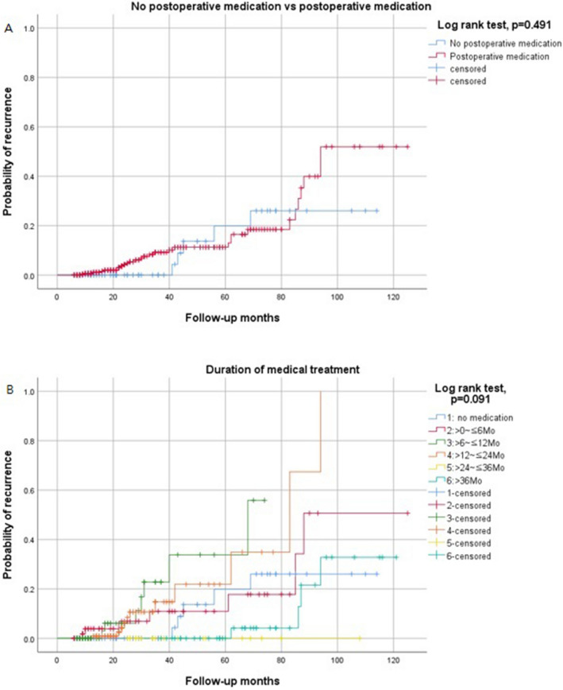
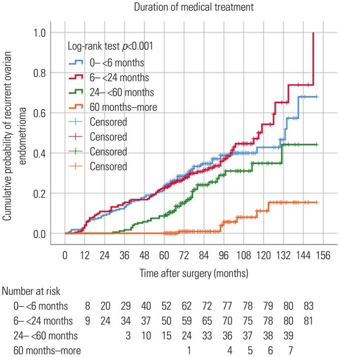

584 — Dự phòng & theo dõi tái phát sau mổ endometrioma: nội tiết dài hạn vs theo dõi / Preventing and monitoring recurrence after endometrioma surgery
Tags: pattern:lac-noi-mac pattern:tai-phat vung:buong-trung protocol:TVUS protocol:MRI-chau incidentaloma:nang-buong-trung
Mức chắc chắn (certainty): tổng hợp y văn (literature synthesis) — tổng hợp từ network meta-analysis, đoàn hệ dài hạn và RCT; số liệu lấy trực tiếp từ nguồn ghi ở sources.md.
1. Tổng quan bệnh học – cơ chế hình ảnh
- Tái phát (recurrence) là gì: nang lạc nội mạc xuất hiện lại sau mổ, do mô lạc nội mạc còn sót hoặc tổn thương mới (de novo). Vì estrogen phụ thuộc, ức chế phóng noãn làm giảm tái phát.
- Ngưỡng định nghĩa KHÔNG thống nhất — đây là điểm phải nêu khi đọc y văn:
- Lee 2020: nang ≥ 2 cm trên siêu âm.
- Nie 2026: nang ≥ 3 cm + đặc điểm siêu âm điển hình trên 2 chu kỳ liên tiếp, bất kể triệu chứng.
- Choi 2023: loại trừ tổn thương tồn dư trên siêu âm đầu tiên 3–6 tháng sau mổ, sau đó mới gọi tái phát.
- Hệ quả: cùng một bệnh nhân có thể "tái phát" theo định nghĩa này nhưng không theo định nghĩa khác — luôn ghi định nghĩa khi so sánh tỷ lệ.
- Tỷ lệ tái phát (các mốc định lượng):
- Gộp 23 nghiên cứu, 4.368 bệnh nhân: 21,5% ở 2 năm và 40–50% ở 5 năm.
- Mổ bảo tồn lần 2: 13,7% ở 2 năm, 37,5% ở 5 năm.
- Đoàn hệ Hàn Quốc 756 bệnh nhân, theo dõi trung vị 85,5 tháng: tái phát 27,9%, mổ lại 8,3%; tích lũy 5,8% / 8,7% / 15,5% / 37,6% tại 24 / 36 / 60 / 120 tháng.
- Đoàn hệ Trung Quốc 1.598 bệnh nhân: tái phát 21,8%; tích lũy 12% / 38% / 55% / 65% tại 1 / 3 / 5 / 7 năm — nguy cơ tăng nhanh sau 72 tháng.
- Nhóm 40–49 tuổi (408 bệnh nhân): tích lũy 3,7% / 6,7% / 11,1% / 16,7% tại 12 / 24 / 36 / 60 tháng.
- TẠI SAO tái phát và tại sao nội tiết có tác dụng:
- Estrogen kích thích mô lạc nội mạc còn sót → chảy máu theo chu kỳ, viêm, xơ dính, nang tái hình thành.
- Thuốc nội tiết gây teo nội mạc lạc chỗ và ức chế phóng noãn → giảm chảy máu/viêm, "làm phẳng" chu kỳ.
- Tác dụng phụ phụ thuộc cơ chế: progestin gây chảy máu bất thường/amenorrhea, tăng cân, giảm ham muốn; GnRH gây mất xương do giảm estrogen; đây là lý do phải chọn theo hồ sơ tác dụng phụ, không chỉ hiệu lực.
- Vì sao phải dự phòng: mổ lặp làm giảm dự trữ buồng trứng (AMH), tăng dính, tăng biến chứng — giảm tái phát quan trọng hơn "mổ sạch" lần đầu.
- Hiệu quả nội tiết sau mổ (network meta-analysis, 6 RCT/675 BN + 16 đoàn hệ/3.089 BN):
- So với theo dõi, RR tái phát (nhóm đoàn hệ): LNG-IUS 0,05 (0,00–0,98); dienogest 0,14 (0,05–0,43); OC liên tục 0,30 (0,11–0,77); GnRHa + OC 0,33 (0,15–0,71); OC chu kỳ 0,35 (0,20–0,60).
- Xếp hạng (SUCRA): LNG-IUS 87,3, dienogest 77,3, GnRHa + LNG-IUS 70,6.
- Gộp RCT: không có khác biệt có ý nghĩa — các RCT chưa đủ mạnh để chứng minh lợi ích; hiệu quả mạnh nhất đến từ đoàn hệ (nguy cơ thiên lệch cao hơn).
- Ngưỡng thời gian — yếu tố quyết định:
- Dùng ≤ 15 tháng: HR 2,869 (2,088–3,941) so với dùng dài hơn.
- Dùng 3–12 tháng rồi ngừng: không giảm tái phát so với theo dõi; một số phác đồ còn kém hơn theo dõi.
- Nhóm dùng < 6 tháng có tái phát tích lũy ~65% ở 120 tháng, so với ~15% ở nhóm ≥ 60 tháng (log-rank p < 0,001) — "dùng ngắn = gần như không dùng".
- Yếu tố nguy cơ định lượng khác:
- Tuổi ≤ 31: HR 2,108 (1,522–2,921); không có thai sau mổ: HR 1,851 (1,309–2,617).
- Hai bên: HR 1,36 (1,06–1,74); nang > 5,5–6,2 cm; tiền sử mổ endometrioma.
- 40–49 tuổi: nội tiết sau mổ không giảm tái phát trong đoàn hệ 408 ca — cá thể hóa, không áp dụng máy móc cho người trẻ.
2. Mẫu hình + chẩn đoán phân biệt theo vị trí & thời điểm (Gamut)
- Câu hỏi đầu tiên: "tái phát" hay "tồn dư"?
- ≤ 6 tháng sau mổ + nang còn ở vị trí cũ → tồn dư/residual, không phải tái phát thật; không mổ lại ngay.
- > 12 tháng + nang mới → tái phát thật.
- > 5 năm → tái phát muộn/de novo; tiếp tục theo dõi vì đường cong vẫn tăng (65% ở 7 năm).
- Gamut theo hình thái:
- Nang một ổ, dịch "kính mờ", T1 sáng + T2 shading → endometrioma tái phát.
- Nhiều ổ/nhiều ngăn → tái phát thể nhiều ổ, hoặc u nhầy/giáp biên (nếu có nhú).
- Nhú/thành dày/ngấm → giả u polypoid, decidualization (nếu có thai), EAOC, u giáp biên.
- Nang đơn thuần, thành mỏng, dịch trong → nang cơ năng/hoàng thể, không phải tái phát.
- Khối dạng ống, vách mỏng, "ngón tay" → ứ dịch vòi trứng (hydrosalpinx) — bẫy sau mổ.
- Gamut theo bối cảnh:
- Sau mổ nội soi bóc nang → tái phát endometrioma, dính, nang giả phúc mạc.
- Sau mổ có nhiễm trùng/áp-xe → áp-xe phần phụ, dính.
- Sau mổ + mang thai → decidualization (xem bài 583).
- Sau mổ + đau chậu mạn → tái phát, DIE, đau thần kinh (bài 556).
3. Bảng so sánh phân biệt (ma trận đối chiếu)
| Thực thể (entity) | Hình ảnh điển hình (US/MRI) | Chốt vào (rule-in) | Chốt loại (rule-out) | Gợi ý xác nhận |
|---|---|---|---|---|
| Endometrioma tồn dư (≤ 6 tháng) | Nang tại vị trí mổ, T1 sáng + T2 shading, kích thước có thể giảm | Xuất hiện ngay sau mổ + cùng vị trí + T1 sáng/T2 shading | Nang mới xuất hiện sau > 12 tháng → tái phát thật | US 3–6 tháng; không mổ lại nếu không triệu chứng |
| Endometrioma tái phát | Nang một ổ, dịch "kính mờ", T1 sáng không mất khi fat-sat + T2 shading | Nang ≥ 2 cm (hoặc ≥ 3 cm theo định nghĩa chặt) + đặc điểm điển hình | Mất tín hiệu T1 khi fat-sat → u quái; dịch trong, thành mỏng → nang cơ năng | US 3–6 tháng/lần; MRI nếu không điển hình |
| Nang cơ năng/hoàng thể | Nang đơn thuần, thành mỏng, dịch trong; tự tan 6–12 tuần | Tự tan khi lặp lại | T1 sáng + T2 shading + không tan → endometrioma | US lặp 6–12 tuần; không mổ vội |
| U quái trưởng thành | Mỡ + vôi hóa + nốt Rokitansky, mức mỡ–dịch | T1 sáng MẤT tín hiệu khi fat-sat | T1 vẫn sáng khi fat-sat → máu/nhầy | CT: mỡ −10 đến −100 HU |
| Hydrosalpinx | Cấu trúc dạng ống, vách mỏng, dịch trong, dấu "ngón tay" | Dạng ống + tách khỏi buồng trứng + không T1 sáng | Nang tròn, T1 sáng → endometrioma | MRI T2 3D; US đầu dò bụng |
| Áp-xe phần phụ | Khối hỗn hợp, thành dày, phù mỡ quanh, ngấm mạnh | Sốt + đau + phù quanh + hạn chế khuếch tán | Không sốt, không phù, T1 sáng/T2 shading → endometrioma | Kháng sinh ± dẫn lưu; MRI |
| U giáp biên/EAOC | Nang lớn, nhú mạch hóa, ADC thấp, xâm lấn vỏ | Nhú ngấm + ADC thấp + tăng nhanh + mất T2 shading | Nhú bờ trơn, ADC cao, không xâm lấn → lành | MRI DCE/DWI; sinh thiết/mổ |
| Nang giả phúc mạc (peritoneal inclusion cyst) | Nang nhiều ngăn, ôm lấy buồng trứng, bờ mỏng, sau dính/mổ | Buồng trứng nằm TRONG nang + tiền sử dính/mổ | Nang tách khỏi buồng trứng, T1 sáng → endometrioma | MRI; theo dõi nếu không triệu chứng |

Trái: endometrioma — T1 sáng, T2 shading, không mất tín hiệu khi fat-sat. Phải: tái phát tích lũy ở nhóm 40–49 tuổi (3,7%/6,7%/11,1%/16,7% tại 12/24/36/60 tháng) — thấp hơn nhiều so với nhóm trẻ, và không giảm khi dùng nội tiết trong đoàn hệ này. Nguồn: Coutureau J et al., Insights Imaging 2023 (PMC10209382) và Lee N et al., Sci Rep 2020 (PMC7536392), CC BY 4.0. Ảnh ghép letterbox.Dấu hiệu chốt then chốt
- T1 sáng không mất khi fat-sat + T2 shading = máu cũ → endometrioma; đây là chốt hình ảnh của "tái phát".
- Thời điểm xuất hiện phân biệt tồn dư (≤ 6 tháng) với tái phát thật (> 12 tháng) — quan trọng hơn kích thước.
- Định nghĩa ≥ 2 cm vs ≥ 3 cm làm thay đổi tỷ lệ báo cáo; luôn ghi rõ ngưỡng.
- Nội tiết chỉ có lợi khi dùng dài hạn/liên tục; 3–12 tháng rồi ngừng = không khác theo dõi.
4. Protocol chụp + hệ phân độ/điểm chuẩn hóa
- Theo dõi sau mổ (thực hành từ đoàn hệ dài hạn):
- Siêu âm đầu tiên 3–6 tháng sau mổ — mục tiêu loại trừ tồn dư, lấy mốc kích thước.
- Sau đó mỗi 6–12 tháng nếu không triệu chứng; sớm hơn nếu đau/tái phát triệu chứng.
- Theo dõi ít nhất 5 năm, lý tưởng 7–10 năm vì đường cong tái phát tăng sau 72 tháng (65% ở 7 năm).

Tái phát tích lũy 12% / 38% / 55% / 65% tại 1 / 3 / 5 / 7 năm (n = 1.598); nguy cơ tăng rõ sau 72 tháng — lý do không dừng theo dõi sớm. Nguồn: Nie J et al., Int J Womens Health 2026 (PMC13105200), Fig. 2, CC BY-NC 4.0 (nguyên bản, không ghép).- Siêu âm (TVUS ± đầu dò bụng):
- Đo 3 chiều, mô tả dịch "kính mờ", vách, nhú, mạch trong nhú.
- So sánh ảnh cũ — bắt buộc để phân biệt tồn dư/tái phát.
- MRI chậu khi siêu âm không điển hình/nghi ác:
- T2W axial/sagittal/coronal; T1W fat-sat; DWI + ADC; DCE nếu có nhú.
- Mục tiêu: xác nhận máu cũ, loại mỡ, đánh giá nhú/ADC, phân biệt hydrosalpinx/nang giả phúc mạc.
- Định nghĩa tái phát dùng trong thực hành (đề xuất, không phải guideline):
- Nang ≥ 2 cm + T1 sáng không mất khi fat-sat + T2 shading trên 2 lần siêu âm cách ≥ 1 chu kỳ, sau khi đã loại tồn dư ở mốc 3–6 tháng.
- Nếu dùng ngưỡng ≥ 3 cm (như Nie 2026) phải ghi rõ — tỷ lệ sẽ thấp hơn.
- Chọn nội tiết sau mổ (theo nguy cơ):
- Nguy cơ cao (tuổi ≤ 31, hai bên, nang > 6 cm, tiền sử mổ, không có thai): nội tiết liên tục dài hạn — LNG-IUS hoặc dienogest 2 mg/ngày hoặc OC liên tục; GnRHa 3–6 tháng + add-back chỉ để khởi đầu, sau đó chuyển duy trì.
- Thời gian: ≥ 15–24 tháng, lý tưởng đến khi có thai hoặc dài hạn nếu không có nhu cầu sinh sản.
- 40–49 tuổi: cá thể hóa; đoàn hệ 408 ca không thấy lợi ích rõ — cân nhắc tác dụng phụ/chi phí.
- Muốn có thai: ngừng nội tiết để phóng noãn; thai kỳ làm giảm tái phát; có thể chuyển sang hỗ trợ sinh sản.

Ba nhóm đều giảm đau tương đương nhưng khác hồ sơ tác dụng phụ: GnRH gây mất xương/ triệu chứng mãn kinh; dienogest gây trầm cảm, tăng cân, chảy máu bất thường; gestrinone gây tác dụng phụ androgen. Chọn theo khả năng dung nạp của bệnh nhân (shared decision-making). Nguồn: Pinto da Costa Viana D et al., Biomedicines 2025 (PMC12467333), Fig. 1, CC BY 4.0.- Theo dõi an toàn thuốc:
- Dienogest: chảy máu bất thường/amenorrhea, tăng cân, khí sắc, giảm ham muốn; BMD giảm ~1,6–1,7% ở 24–52 tuần (nhẹ, nhưng theo dõi nếu dùng lâu).
- GnRHa: mất xương cột sống 5–8% sau 3–6 tháng → bắt buộc add-back nếu dùng > 6 tháng.
- LNG-IUS: đặt sau mổ; hiệu quả cao nhất trong NMA đoàn hệ nhưng bằng chứng RCT hạn chế.
- BMD/DXA: cân nhắc nếu dùng nội tiết > 2 năm, có yếu tố nguy cơ loãng xương; bổ sung canxi + vitamin D.
- ESHRE 2022 (khuyến cáo mạnh):
- LNG-IUS 52 mg hoặc combined hormonal contraceptive (CHC) sau mổ ít nhất 18–24 tháng để dự phòng tái phát đau liên quan lạc nội mạc (khuyến cáo 65, mức mạnh).
- Phụ nữ chưa muốn có thai ngay: nội tiết dài hạn (ví dụ CHC) để dự phòng tái phát endometrioma và triệu chứng (khuyến cáo 66, mức mạnh).
- Không dùng nội tiết nếu muốn có thai ngay; không có bằng chứng nội tiết sau mổ cải thiện tỷ lệ sinh sống.
- Phẫu thuật: bóc nang (cystectomy) thay vì dẫn lưu/đốt (khuyến cáo 64, mức mạnh), nhưng phải cân nhắc giảm dự trữ buồng trứng.
flowchart TD
A[Sau mổ endometrioma] --> B{Siêu âm 3-6 tháng: còn nang?}
B -->|Có, cùng vị trí| C[Tồn dư: theo dõi, KHÔNG mổ lại]
B -->|Không| D[Đánh giá nguy cơ: tuổi ≤31, hai bên, nang >6 cm, tiền sử mổ, chưa có thai]
D --> E{Nguy cơ cao?}
E -->|Có| F[Nội tiết liên tục dài hạn: LNG-IUS / dienogest 2 mg / OC liên tục]
E -->|Không| G[Theo dõi 6-12 tháng + tư vấn]
F --> H{Muốn có thai?}
H -->|Có| I[Ngừng thuốc để phóng noãn; hỗ trợ sinh sản nếu cần]
H -->|Không| J[Tiếp tục ≥15-24 tháng; cân nhắc dài hạn + theo dõi BMD]
C --> K[US 6-12 tháng]
G --> K
I --> K
J --> K
K --> L{Nang ≥2 cm + T1 sáng/T2 shading?}
L -->|Không| K
L -->|Có| M{Triệu chứng / tăng nhanh / nhú?}
M -->|Không| N[Tiếp tục theo dõi hoặc nội tiết]
M -->|Có| O[MRI + hội chẩn: mổ lại hay tiếp tục nội tiết]
5. Biến thể bình thường và cạm bẫy
- "Tái phát" trong 3–6 tháng đầu thường là TỒN DƯ: đoàn hệ Choi loại trừ tồn dư trên siêu âm 3–6 tháng trước khi định nghĩa tái phát. Mổ lại sớm = nguy cơ mất buồng trứng vô ích.
- Nang cơ năng giả tái phát: nang đơn thuần, thành mỏng, dịch trong, tự tan 6–12 tuần — không phải endometrioma; không mổ.
- Dùng nội tiết 3–6 tháng rồi ngừng không có lợi: trong NMA, nhóm dùng ngắn không giảm tái phát so với theo dõi; đừng "cho thuốc cho có".
- Chảy máu bất thường do dienogest không phải thất bại: gặp ở 14,6% (AUB) và 66,2% amenorrhea trong đoàn hệ 514 ca; giải thích trước để tránh bỏ thuốc.
- Tác dụng phụ dài hạn của dienogest: ở nhóm > 15 tháng, đau đầu 24,7%, tăng cân 24,7%, giảm ham muốn 45% — cao hơn rõ so với nhóm ngắn; hỏi và xử lý chủ động.
- GnRHa không add-back: mất xương 5–8% sau 3–6 tháng — không dùng đơn độc dài hạn.
- Người 40–49 tuổi: nội tiết không giảm tái phát trong đoàn hệ 408 ca (p = 0,491 ở Hình 3A); đừng áp dụng kết quả nhóm trẻ cho nhóm này.
- Bẫy hình ảnh sau mổ: buồng trứng dính, lệch vị trí; hydrosalpinx và nang giả phúc mạc dễ bị gọi là tái phát. Luôn so ảnh cũ + xác nhận T1 sáng/T2 shading.
- Chuyển dạng ác: nhú mới, mất T2 shading, tăng nhanh, hậu mãn kinh, ADC thấp → MRI + sinh thiết, không theo dõi đơn thuần.
- Cạm bẫy mặt cắt: nang T1 sáng cạnh tử cung phải phân biệt với máu tụ sau mổ (T1 sáng, nhưng không có vỏ nang/T2 shading); dùng T2 + theo dõi để phân biệt.
6. Tự lượng giá — Blind Quiz
Ca 1 — 30 tuổi, mổ bóc hai bên endometrioma 6 tháng trước, hiện 4 cm tái phát, đau nhẹ. Chọn gì?

- Gợi ý: hai bên, tuổi ≤ 31, chưa có thai; siêu âm: nang T1 sáng + T2 shading, không nhú.
- Câu hỏi: Đây là tồn dư hay tái phát? Yếu tố nguy cơ nào? Chọn nội tiết gì và trong bao lâu?
Bấm để hiện đáp án (findings + chẩn đoán)
- Dấu hiệu: nang T1 sáng, T2 shading, không nhú, kích thước 4 cm; xuất hiện sau 6 tháng — nằm ở ranh giới, nhưng nang mới/không giảm sau mốc 3–6 tháng → tái phát.
- Nguy cơ: tuổi ≤ 31 (HR 2,108), hai bên (HR 1,36), chưa có thai (HR 1,851), tiền sử mổ.
- Xử trí: nội tiết liên tục dài hạn — ưu tiên LNG-IUS hoặc dienogest 2 mg/ngày hoặc OC liên tục; thời gian ≥ 15–24 tháng, lý tưởng đến khi có thai. Không mổ lại nếu chỉ 4 cm, đau nhẹ.
- Nguồn ảnh: Coutureau J et al., Insights Imaging 2023 (PMC10209382), Fig. 3, CC BY 4.0.
Ca 2 — 45 tuổi, 3 tháng sau mổ, siêu âm còn nang 3 cm dịch "kính mờ". Có phải tái phát?

- Gợi ý: không triệu chứng; mổ bóc nang 3 tháng trước; ảnh cũ có nang cùng vị trí.
- Câu hỏi: Tồn dư hay tái phát? Có nên mổ lại? Vai trò của nội tiết ở tuổi 45?
Bấm để hiện đáp án (findings + chẩn đoán)
- Dấu hiệu: nang 3 cm, cùng vị trí, còn ngay sau mổ 3 tháng → tồn dư, không phải tái phát thật.
- Xử trí: theo dõi (US 6–12 tháng), không mổ lại nếu không triệu chứng.
- Nội tiết ở 40–49 tuổi: đoàn hệ 408 ca cho thấy không giảm tái phát — nhóm không dùng thuốc vs có dùng thuốc log-rank p = 0,491; thời gian dùng thuốc p = 0,091; cá thể hóa, không mặc định kê dài hạn.
- Nguồn ảnh: Lee N et al., Sci Rep 2020 (PMC7536392), Fig. 3, CC BY 4.0.
Ca 3 — Đọc đường cong: vì sao "dùng thuốc 6 tháng" không đủ?

- Gợi ý: so nhóm < 6 tháng với ≥ 60 tháng; trục tung là xác suất tái phát tích lũy.
- Câu hỏi: Nhóm nào tái phát cao nhất? Ngưỡng thời gian nào có ý nghĩa? Hệ quả thực hành?
Bấm để hiện đáp án (findings + chẩn đoán)
- Dấu hiệu: nhóm < 6 tháng có đường cong tăng nhanh, đạt ~65% ở 120 tháng; nhóm ≥ 60 tháng chỉ ~15% (log-rank p < 0,001).
- Chốt: thời gian dùng là yếu tố quyết định — dùng ngắn gần như không có lợi; trong đoàn hệ khác, dùng ≤ 15 tháng có HR 2,869 so với dài hơn.
- Thực hành: nếu đã quyết định dự phòng, phải dùng liên tục ≥ 15–24 tháng (lý tưởng đến khi có thai); không dùng 3–6 tháng rồi ngừng.
- Nguồn ảnh: Choi SH et al., Yonsei Med J 2023 (PMC9971436), Fig. 4, CC BY-NC 4.0 (nguyên bản, không ghép).
Bài liên quan chéo
- 500 – Tổng quan Vú & Sản Phụ khoa
- 543 – Nang lạc nội mạc buồng trứng: chẩn đoán & nguy cơ chuyển dạng
- 583 – Nang lạc nội mạc trong thai kỳ: decidualization, vỡ – xoắn
- 542 – U xơ dưới niêm mạc & can thiệp bảo tồn (bảo tồn sinh sản)
- 533 – Theo dõi & bảo tồn sinh sản sau u buồng trứng (nang lạc nội mạc giả tái phát)
- 556 – Đau sàn chậu cơ–mạc & đau thần kinh thẹn (đau chậu mạn sau mổ)
Ảnh
- Tên file:
584_slug_Modality_SourceID.jpg. Nguồn + giấy phép từng ảnh trongimages/CREDITS.md. - 3 ảnh CC BY 4.0 (PMC10209382, PMC7536392 ×2) + 1 ảnh CC BY-NC 4.0 (PMC9971436, giữ nguyên bản) + 1 ảnh CC BY-NC 4.0 (PMC13105200, chỉ trích số, không ghép) + 1 ảnh ghép CC BY 4.0.
Không dùng để chẩn đoán độc lập khi chưa có người hướng dẫn (Disclaimer y tế).